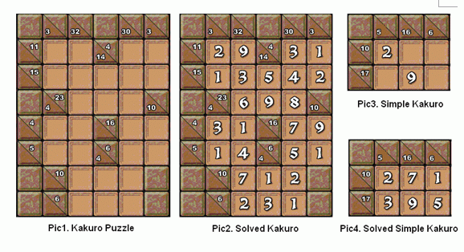

输入包含多组测试数据。第一行包含一个正整数T，表示测试数据数目。每组数据第一行是n(n<10)和m(m<10)，表示数谜的形状的大小。接下来一行有n个整数，是相应的行要求；然后一行是m个整数，是相应的列要求。接下来的n行每行有m个小于10的非负整数，0表示该空格还没有被填数字，其他表示coolzzz同学已经填好的数字。输入数据保证未填数字的空格不会超过16个。

输入包含多组测试数据。第一行包含一个正整数T，表示测试数据数目。每组数据第一行是n(n<10)和m(m<10)，表示数谜的形状的大小。接下来一行有n个整数，是相应的行要求；然后一行是m个整数，是相应的列要求。接下来的n行每行有m个小于10的非负整数，0表示该空格还没有被填数字，其他表示coolzzz同学已经填好的数字。输入数据保证未填数字的空格不会超过16个。
对于每组测试数据，输出若干行。如果基于coolzzz已填的结果，该数谜只有一个解，则输出该解；如果不止一个解，则输出一行“Not unique.”；如果没有解，则输出一行“No answer.”。
3
3 3
6 6 6
6 6 6
0 0 0
0 3 0
0 0 0
2 3
10 17
5 16 6
2 0 0
0 9 0
2 2
3 5
4 4
0 0
0 0
Not unique.
2 7 1
3 9 5
No answer.